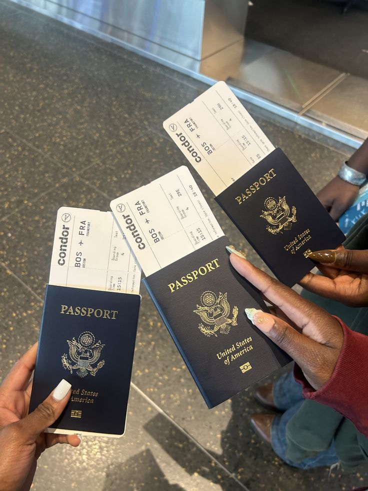
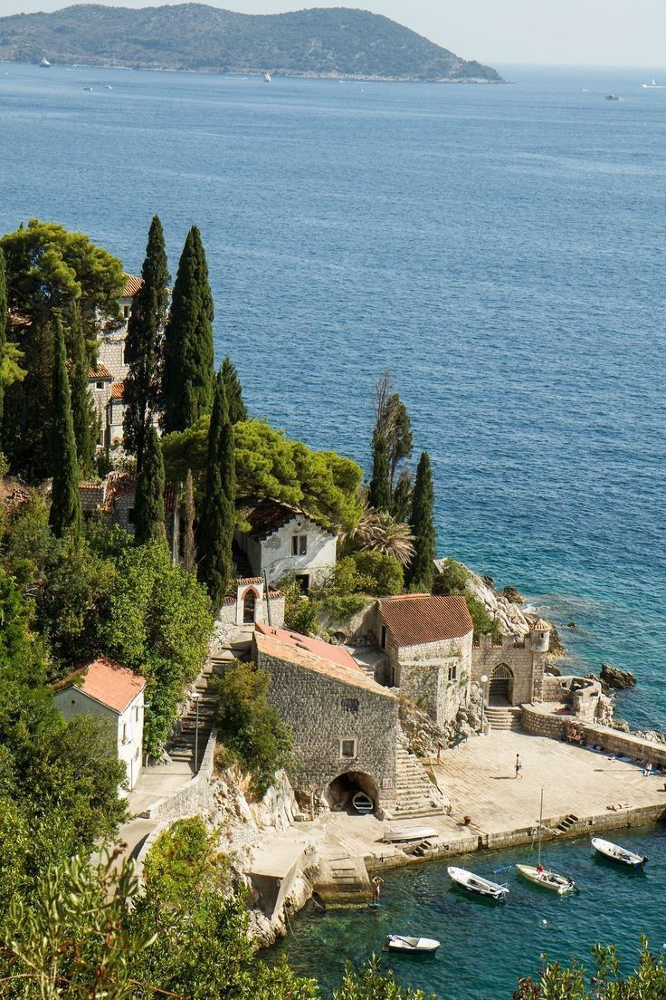
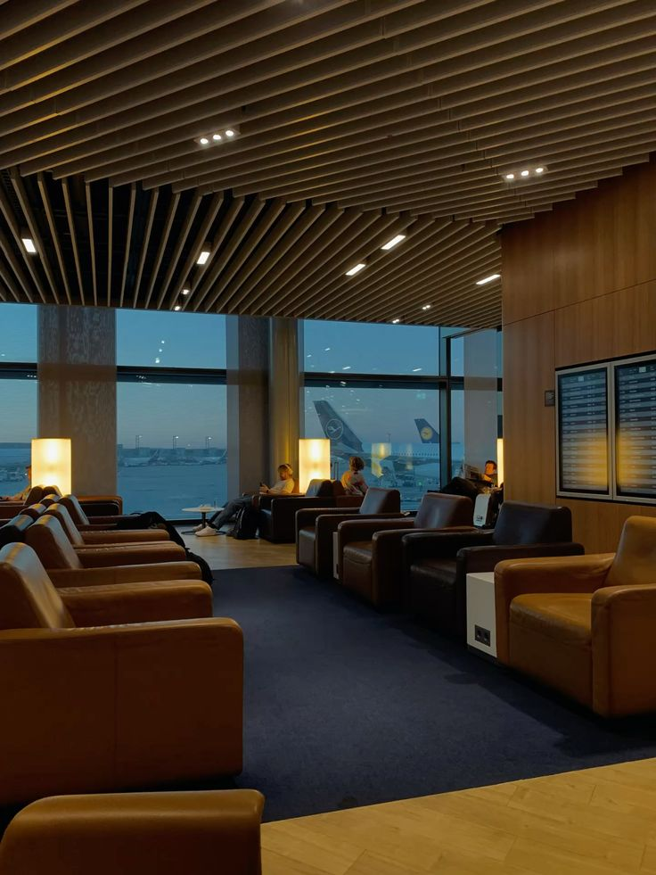

Eat, drink, recharge
Globally inspired dining, premium cocktails, nonalcoholic drinks, wine, high-speed Wi-Fi, work areas, and shower suites in some locations.
Travel cards can help with flights, hotels, airport lounges, TSA PreCheck, Global Entry, and trip protections. LifeScore breaks the benefits down by the type of traveler, not just the flashiest annual fee.
A premium travel card only makes sense if the credits, portals, lounges, and travel habits are real for you.

The card is not the flex. The setup is. Good travel rewards should make trips feel more organized, less random, and easier to plan.


Lounges are not just "free food." They can mean quieter seating, Wi-Fi, outlets, snacks, drinks, cleaner bathrooms, showers in some locations, workspaces, and a more relaxed airport experience. Access depends on the card, airport, lounge network, hours, capacity, guest rules, enrollment, and boarding pass requirements.
A premium travel card is only worth it if the user actually travels through airports where the lounge access matters. Before choosing a premium card, check home airport, layover airports, lounge hours, guest rules, capacity restrictions, enrollment requirements, and whether card credits require booking through a travel portal.
Globally inspired dining, premium cocktails, nonalcoholic drinks, wine, high-speed Wi-Fi, work areas, and shower suites in some locations.
Locally inspired food, premium drinks, power outlets, calm seating, wellness perks, and family or nursing rooms at select lounges.
Chef-inspired food, grab-and-go options, craft drinks, workspaces, relaxation rooms, showers, and app capacity tools at select locations.

Listed from strongest to weakest lounge usefulness based on the networks in your provided research. Start with your real route.